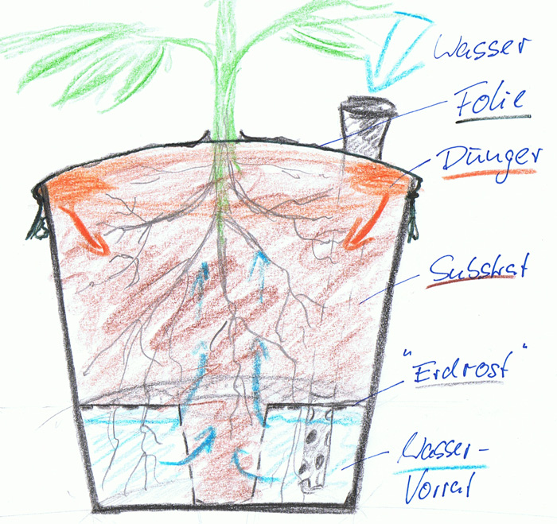
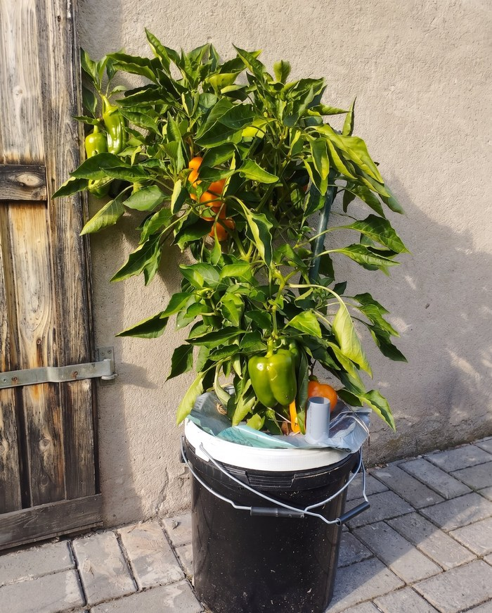

Selbstbewässernde & selbstdüngende Pflanzkübel mit maximaler Mineraldichte. Gemüse mit Geschmack und Gehalt, die so kein Supermarkt mehr liefern kann.
Substrat-Rechner → Eigenbau-Fahrplan

Klassischer Anbau in Beet oder Töpfen wäscht Dünger und Mineralien mit Gießwasser und Regen aus: Wertverlust, Umweltproblem — und dennoch brauchen die Methoden viel Aufmerksamkeit und Pflege. Das Growtainer-Prinzip ändert das, überall wo es genug Licht für Pflanzen gibt.
Das Wasserreservoir versorgt die Pflanze mehrere Tage mit genau der Wassermenge, die sie zu jeder Tageszeit braucht. Kein manuelles Optimieren zwischen Staunässe und zu trocken.
Volldünger als solider Streifen oben, gibt Nahrung gleichmäßig über die ganze Saison ab. Pionier-Wurzeln holen sich passgenau. Kein Auswaschen, kein Versickern, kein Verbrennen der Pflanze.
Urgesteinsmehl für Spurenelemente, Dolomit für Calcium-Magnesium in optimaler Kombination. Wurmhumus und Kompost für Bodenleben und als Aufnahmehelfer der Mineralien.
Einfach Eimer-Volumen und Anzahl eintragen und Zutatenmengen berechnen lassen. Für einen einfachen Schnellstart: kommerzielle Bio-Gemüseerde auswählen und sehen, wie sie auf Growtainer-Standard aufgewertet werden kann. Profi-Mischer wählen Vollvariante A oder B aus Protokoll 3.
Im einfachsten Fall mit ein wenig Geschick: ein einziger Tag. Realistisch: paar Tage Vorlauf fürs Auftreiben von Lebensmitteleimern oder den 3D-Druck der Erdroste, sonst alles vom Baumarkt direkt.
Der Growtainer löst mehrere Probleme parallel: das Vitalstoffdefizit der industriellen Lebensmittel, das Platzproblem herkömmlicher Anbaumethoden, die Einstiegshürde ohne Gartenerfahrung (selbstregulierend) und das psychische Defizit durch fehlenden Pflanzenkontakt im Alltag. Zudem schmeckt die frische Ernte unschlagbar gut.
Lebensmittel-Studien zeigen permanente Rückgänge der Nährstoffdichte. Hauptursachen: Hochertragssorten, ausgelaugte Böden, Kalk und Agrochemikalien wie Glyphosat, die Spurenelemente wie das Stimmungsmineral Mangan verdrängen und fest binden.
Selbst Bio-Gemüse aus erschöpften Böden liefert oft nicht das, was die Tabelle verspricht.
Mayer 2022 · Davis 2009 · NVS II
Regelmäßiger Pflanzenkontakt senkt Stresshormone und Blutdruck, reduziert depressive Symptome und Angst-Marker — bei mildem bis mittelgradigem Stress oft stärker als Medikamente.
Pflanzen geben zusätzlich sog. Phytonzide ab — flüchtige organische Verbindungen, die unsere Immunaktivität für mehrere Tage erhöhen. Der Growtainer hat hier dreifachen Wert: Pflanze, Mineralreserve und frische, gesunde Zutaten für eine heilsame Ernährung in einem.
Soga, Gaston & Yamaura 2017 · Li 2010 (Forst-Bademedizin)